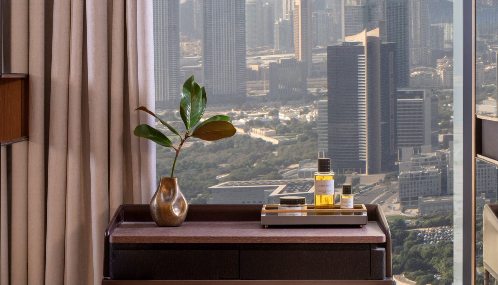
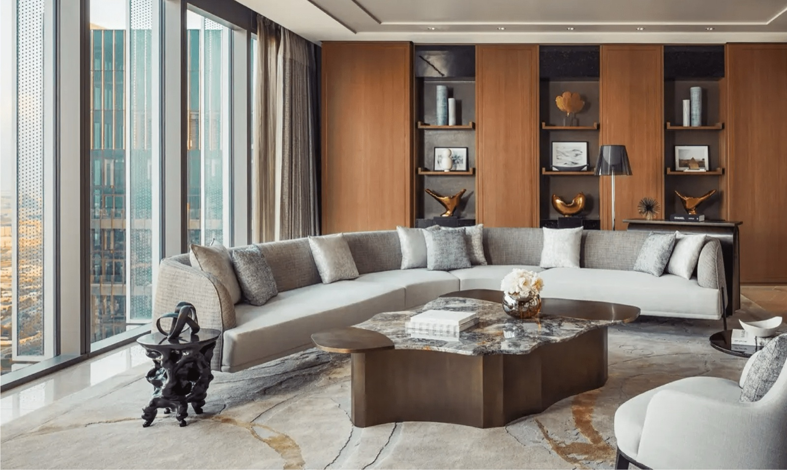
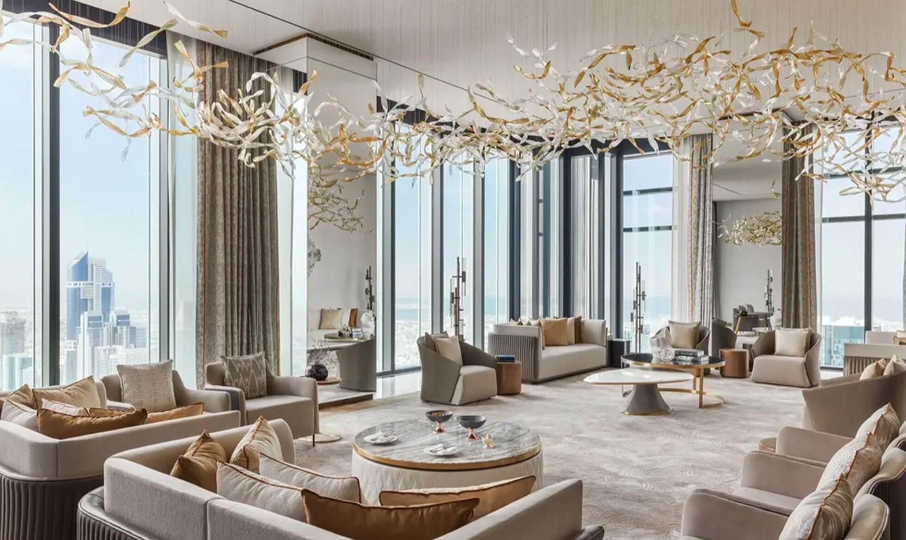
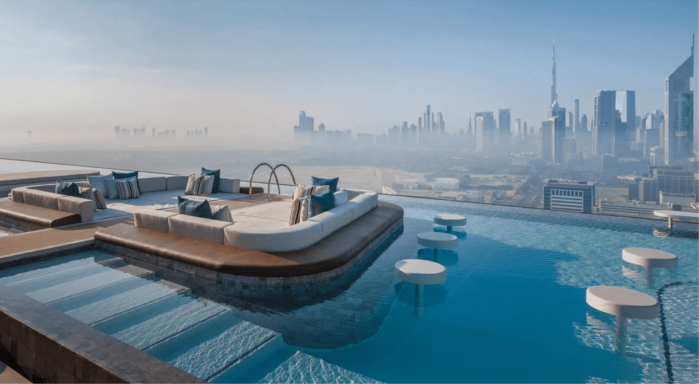

Journal
One&Only One Za'abeel, for two.

There is a particular hour in Dubai, somewhere around five in the afternoon, when the heat finally lets go and the light turns the colour of weak tea. If you are in the right room, high enough up, you can watch it happen across the whole city — the towers going gold, then rose, then dark, and the lights coming on beneath you one floor at a time.
You are usually not doing anything during that hour. That is the point of it.
Almost every hotel in Dubai is built, quite sensibly, for families — kids' clubs, lazy rivers, a pool scene that peaks at eleven in the morning. I book those constantly and they are wonderful at what they do. But if it is the two of you, and you are marking something, you do not want a resort. You want somewhere that treats an evening as the reason you came.
One&Only One Za'abeel is the one I book for that.
The building does something unusual
Two towers, with a third laid sideways across the top of them.
The Link is suspended a hundred metres up, running horizontally between the towers, with a pool along its length and restaurants at either end. It is the sort of thing that could very easily be a gimmick, and somehow is not. You walk out onto it at dusk and the city is simply there, on every side, and nobody says very much for a minute.
Underneath it, only 229 rooms. That number is the quiet luxury of the place. Atlantis The Royal has 795. The difference you feel is not thread count — it is how often you find yourselves alone somewhere that was clearly built to hold a hundred people.
Which room, and why it matters more than usual
This is the one decision worth spending real money on.

The entry-level rooms here are lovely, and they are not why you came. You came for that hour I described, and for that you need somewhere to sit in it together — a sofa facing the glass, space to leave a drink down, a second room so that one of you getting ready does not fill the whole suite.
A signature suite is the floor I would set. Ask for a corner. Being wrapped in glass on two sides at that height is not a small upgrade over a single window; it is the difference between watching the view and being inside it.
If this is a milestone — a tenth anniversary, a delayed honeymoon, the birthday nobody wants named — the villas have private pools, and that is the version people are still describing to friends a decade later. It is a real jump in cost. I would only suggest it when the occasion genuinely carries it.

Where you will actually eat
People fly in for these without ever staying upstairs.
La Dame de Pic is Anne-Sophie Pic's room, and it is the most serious cooking in the building — precise, quiet, the kind of dinner where you both stop talking for a moment after the first course. Make this the big night. Book it before you fly; it does not open up on arrival.
Tapasake is Japanese, up on The Link, with the view doing a great deal of the work. This is the better first evening — excellent, but it will not ask three hours of you when you have just landed.
Andaliman is louder and later, Southeast Asian, and where the night goes afterwards if you are not ready for it to end.
The practical grace of this is that three restaurants of that standard live in one building. You can spend four nights here and never once negotiate a taxi at nine at night, which in Dubai is worth more to an evening than it sounds.
The part of the trip nobody plans

The Guerlain spa is genuinely good and the pools on The Link are where an afternoon disappears pleasantly. But the thing I would protect hardest is one full day with nothing on it at all. Late breakfast. No car. No reservation until evening.
Couples arrive in Dubai with a list and go home tired, having seen a great deal and rested not at all. The trips people describe fondly afterwards almost always contain one day that, on paper, sounds like nothing happened.
When I would tell you not to book it
This matters more than anything above.
If what you want is a beach, this is not it. There is a beach club arrangement and it is fine, but if the image in your head is sand and sea, you want Jumeirah Marsa Al Arab or Bulgari, and you will be happier there. I would tell you so.
If you want stillness above all else, Bulgari sits on its own island and is the better answer. One Za'abeel has a pulse to it. That is deliberate, and it is not what every couple is after.
If the children are coming, this works, but it was not built with them in mind. Atlantis The Royal or Marsa Al Arab will give everyone a better week, including you.
When to go
Late October through April. The rest of the year is a compromise.
Outside that window the heat takes away The Link, the pools, and the terraces — which is to say most of what you came for. Late October and early November are the sweet spot: the season has opened, the evenings are perfect, and rates have not yet climbed to their December peak.
December to February is the finest weather and the highest price. March and early April are the quiet answer — still lovely, noticeably cheaper, and the city has emptied out a little.
How I would put it together
Four nights. A signature suite, corner if they have one. La Dame de Pic reserved before you leave home. One evening left deliberately empty. A late checkout arranged in advance, so the last morning is slow rather than spent watching a clock.
Booked through KARCH, where the property participates, the same stay can carry a room upgrade where available, daily breakfast, and a property credit — at the rate you would have paid booking direct. On a four-night suite that is not a small sum. And arriving somewhere already expected, on an occasion that matters, changes the whole first hour.
Fuller notes on the property here. Or tell me what you are marking, and I will tell you honestly whether this is the right room for it.